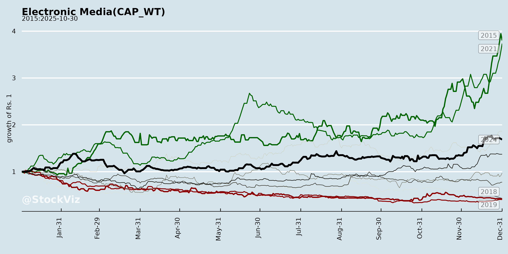
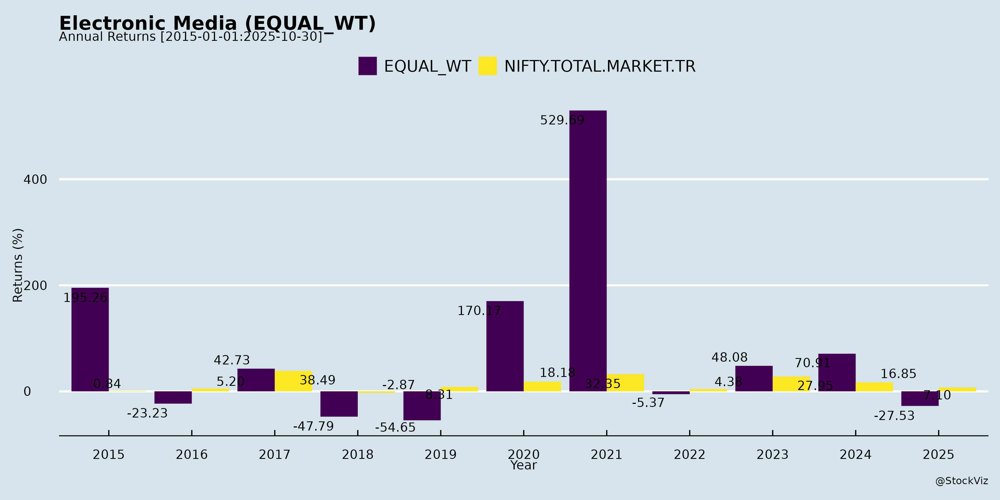
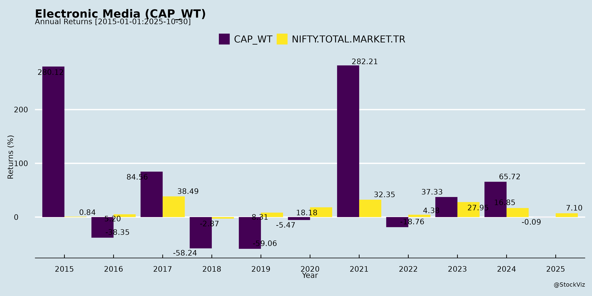
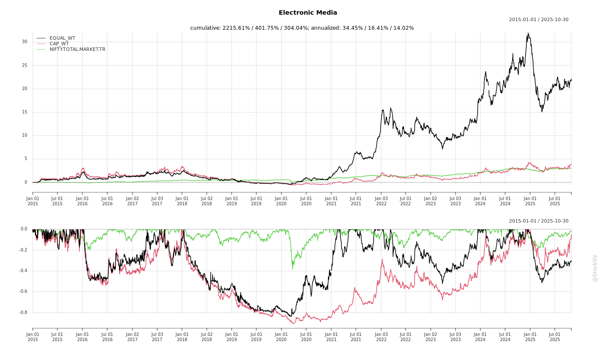
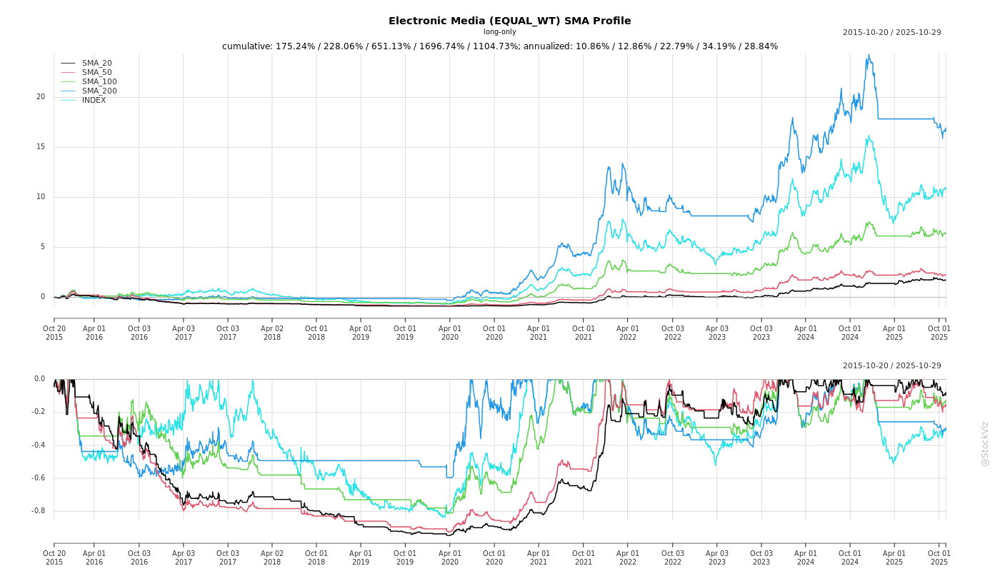
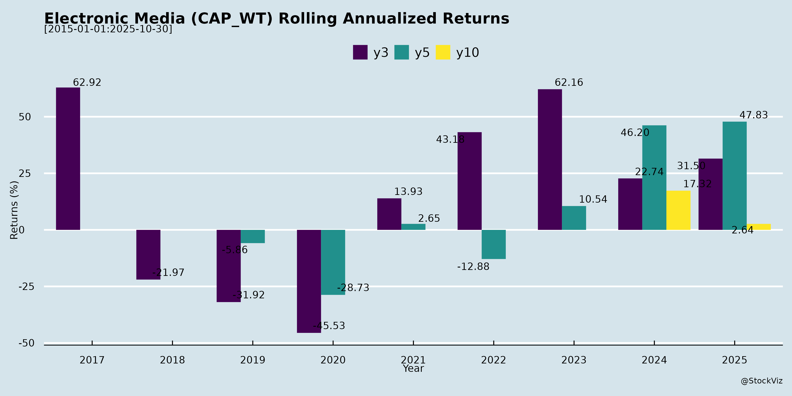

Electronic Media
Industry Metrics
February 20, 2026
Annual Returns



Cumulative Returns and Drawdowns

SMA Scenarios


Current Distance from SMA
Rolling Returns

Market Cap
EBIT (% of Industry Total)
Revenue (% of Industry Total)
AI Summaries
Analyst
asof: 2025-11-30
Analysis of Cyber Media (India) Limited in the Context of Indian Electronic/Digital Media Sector
Cyber Media (India) Ltd. (CMIL) operates as a key player in India’s B2B technology media landscape, blending traditional print/digital publishing (e.g., DataQuest, PCQuest), events, data analytics, and digital marketing services via its subsidiary CMRSL. While rooted in print, it is pivoting aggressively to digital/electronic formats (websites, social media, programmatic ads, AI-driven tools), aligning with the sector’s shift from print to multi-platform electronic media (digital video, podcasts, social, data-driven content). The Indian electronic media market (valued at ~₹2.5 lakh crore in FY25, growing 12-15% CAGR) is buoyed by digital ad spend (projected 25% CAGR to ₹1.2 lakh crore by FY28), but faces ad volatility and competition. Below is the analysis based on the Q1FY26 earnings call transcript.
Tailwinds (Supportive Factors)
- Digital Momentum: 90% YoY traffic growth to 11M+ users, 30M Instagram views, 12M Facebook page views, 2.2M LinkedIn engagements. Subscriptions exceed pre-COVID levels; archival content monetized via digital packs (e.g., MIT, OTT platforms).
- Financial Turnaround: Q1FY26 revenue ₹26.08 Cr (+25.5% YoY), EBITDA ₹1.58 Cr (+486% YoY), PBT ₹1.3 Cr (vs. negative prior). 4-yr revenue CAGR 22.6%; legacy issues (US losses, DRT/NCLT litigations, taxes) fully resolved.
- Strategic Positioning: Google-certified partner (AdWords, DV360, GAM360); AI/ML tools (CM Galaxy, AuxoAds) for programmatic ads; diversified into high-growth adjacencies (semiconductors, EVs, autonomous vehicles) via data analytics.
- Promoter Commitment: Founder group (61.79% entitlement) subscribing ~75% of ₹10 Cr rights issue (₹3.31 Cr WC, ₹2.5 Cr growth capex).
- Sector Synergies: Benefits from India’s digital ad boom (15-20% sector growth) and data/AI tailwinds; strong B2B client base (Cisco, Dell, HP, Google).
Headwinds (Challenges)
- Historical Stagnation: Revenue flat at ₹20-25 Cr/quarter for 12-13 quarters due to management focus on legacy resolutions, diverting bandwidth from growth.
- Print-to-Digital Transition Pressures: Traditional print brands (43-yr legacy) face secular decline amid rising digital distribution costs; multi-form shift (podcasts, videos, webinars) requires capex.
- Margin Constraints: EBITDA margin ~6% in Q1FY26 (improved but thin); high debtor/creditor management post-legacy cleanup.
- Macro Ad Cyclicality: Indian electronic media vulnerable to IT sector slowdowns (CMIL’s core); Q1 seasonality noted as “best quarter.”
Growth Prospects
- High-Conviction Drivers (Target: Robust FY26 with Q2 off to strong start): | Area | Key Initiatives | Projected Impact | |———————–|——————————————|———————————–| | Digital Marketing | Programmatic (demand/supply side), AI tools, partnerships (Meta, Pubmatic) | Fastest-growing segment; 20-25% sector CAGR. | | Data Analytics | Insights/trackers, custom dashboards; intl. expansion (Middle East); semiconductors/EVs focus | Leverage 1st-party data; new “oil” for AI era. | | Content Monetization | Subscriptions (ONDC, Amazon), legacy archives (universities, corporates), events/webinars | Steady recurring revenue; 90% digital traffic base. | | Expansion | Geographical (Singapore offices), startup investments (20 active, 5-10 new/yr), possible CMRSL merger | Diversified streams; single listed entity efficiency. |
- Overall Outlook: 20-30% revenue growth feasible in FY26 via digital first (pillars: innovation, geo-expansion, efficiency). Rights issue funds to fuel WC/growth.
Key Risks
| Risk Category | Description | Mitigation/Notes |
|---|---|---|
| Execution | Post-legacy refocus may underdeliver; over-reliance on promoter bandwidth. | Strong Q1 track record; Dhaval Gupta driving digital. |
| Competition | Intense in digital ads/programmatic (Google, independents); new entrants in tech media/data. | Unique Google suite license; 43-yr brand loyalty. |
| Financial | Rights issue undersubscription (unlikely, 75% promoter take-up); debt conversion to equity. | Improved balance sheet; blue-chip clients. |
| Macro/Sector | Ad spend cuts in IT slowdown; regulatory (SEBI data privacy); AI disruption. | Diversified (media + analytics + marketing); AI adopter. |
| Operational | Cybersecurity/data breaches in analytics; talent retention in tech media. | Tech-driven ops; people-centric culture. |
Summary
CyberMedia is well-positioned for a digital renaissance in India’s electronic media sector, with strong tailwinds from resolved legacies, explosive digital metrics, and AI/data pivots offsetting past headwinds like stagnation and print erosion. Growth prospects are compelling (20-30% FY26 upside via programmatic/digital marketing and adjacencies), fueled by ₹10 Cr rights issue and promoter skin-in-game. However, key risks center on execution in a competitive, cyclical ad market—watch Q2 results for sustained momentum. Investment Thesis: Bullish for digital transformers; legacy brands + tech stack = undervalued growth play (EV likely low vs. peers). Monitor ad recovery and subsidiary synergies.
Financial
asof: 2025-11-30
Analysis of Indian Electronic Media Sector (Based on Q3 FY25 Financials of Select Listed Players)
The provided documents cover unaudited Q3 & 9M FY25 results (ended Dec 2024) for Sambhaav Media Ltd, Diligent Media (DNA), CyberMedia (India) Ltd (Q1 FY26 preview), and SAB Events & Governance Now Media Ltd. These firms span print, digital, broadcasting, events (MICE), and tech-allied media services, offering a snapshot of the Indian electronic/digital media landscape. The sector faces digital disruption amid ad slowdowns, but shows pockets of resilience. Key metrics: Aggregate revenue ~₹5,000L (Q3), mixed PAT (profitable quarters but 9M losses common), high other income reliance.
Tailwinds (Positive Factors)
- Digital Pivot Success: CyberMedia’s digital segment drove 85% revenue (₹2,209L Q1, up YoY); Sambhaav’s tech-allied grew to ₹201L (Q3). DNA focuses solely on digital media.
- Revenue Stability/Growth: Sambhaav consolidated revenue +7% YoY (₹3,098L 9M); CyberMedia +25% QoQ (₹2,584L). Events recovery in SAB (ground events resuming).
- Cost Optimization: Sambhaav continuing ops PBT ₹192L (9M turnaround from loss); CyberMedia PAT swing to ₹111L profit. Declining finance costs (e.g., Sambhaav -49% YoY).
- Other Income Boost: DNA’s ₹506L (Q3, 75% of income) from settlements; Sambhaav ₹155L (9M).
- M&A/Resolution Plays: SAB’s NCLT-approved resolution plan (Oct 2022) stabilizing ops; Sambhaav joint venture gains.
Headwinds (Challenges)
- Low Topline & Margin Pressure: SAB revenue dismal (₹44L Q3); DNA ₹171L (down QoQ). High fixed costs (broadcasting ₹350L/qtr in Sambhaav; employee/depreciation ~30-40% expenses).
- Persistent Losses: DNA 9M PAT ₹963L but on negative equity (-₹26,917L); SAB 9M loss ₹43L; CyberMedia historical FY25 loss ₹972L.
- Discontinued Ops Drag: Sambhaav ₹25L 9M loss from surrendered GSRTC contract.
- Liquidity Squeeze: SAB current liabilities 4.7x assets; DNA accumulated losses exceed capital.
- Ad Market Slump: Print/media segments weak (Sambhaav Media ₹813L Q3, flat; CyberMedia Media loss-making).
Growth Prospects
- Digital & Tech Expansion (High Potential): Sector shift to OTT/digital ads (projected 15-20% CAGR per FICCI-EY). CyberMedia digital at ₹7,542L FY25; Sambhaav tech ₹597L 9M (+17% YoY). DNA invoicing trademarks for cash.
- Events/MICE Revival: SAB ramping post-resolution; industry ~₹50,000Cr by FY26.
- Consolidation: Sambhaav subsidiary (Ved Technoserve); CyberMedia 100% control via Ind AS 110.
- Turnaround Momentum: Sambhaav FY25 continuing PAT trajectory positive; CyberMedia Q1 profit inflection.
- Outlook: 10-15% sector revenue growth FY26 on digital ads/elections, but needs 20%+ EBITDA margins for sustainability.
Key Risks
- Going Concern Uncertainty (High): DNA/SAB explicit notes; auditor emphasis (DNA impairment on ₹17,340L ICDs; SAB goodwill ₹81L untested, unprovided interest ₹18L).
- Regulatory/Legal: Sambhaav IT raid (AY22-23 notices, uncertain impact); DNA arbitration on ICDs/NCRPS; SAB debt defaults.
- Auditor Qualifications: DNA (Ind AS 109 non-compliance); SAB (impairment/interest); unmodified for Sambhaav/CyberMedia but Emphases of Matter.
- Liquidity/Debt: High leverage (Sambhaav finance ₹84L 9M); SAB inability to service debt.
- One-Off Dependence: DNA/CyberMedia exceptional items (trademarks, settlements); cyclical ad revenues vulnerable to macro slowdown.
- Sector Risks: Intense competition (big tech/Reliance), ad tariff pressures, content costs; potential SEBI fines (Sambhaav director age norm).
Summary Verdict: Cautious Recovery. Tailwinds from digital/events offset headwinds like low revenues/debt. Growth hinged on digital scale-up (bull case: 15% CAGR), but risks (going concern, legal) cap upside. Investors: Monitor Q4 liquidity; Sambhaav/CyberMedia relatively stable vs. DNA/SAB distress. Sector PE low (~10-15x) signals value but execution critical.
(Analysis based solely on filings; no external data. All figures ₹ Lakhs unless stated.)
General
asof: 2025-11-30
Analysis of Indian Electronic Media Sector
Using the provided documents from listed media companies (primarily Sambhaav Media Ltd., with insights from Diligent Media, CyberMedia, and SAB Events & Governance Now Media), this analysis focuses on the Indian Electronic Media sub-sector (TV broadcasting, news channels, digital media, and allied services). Sambhaav’s disclosures dominate, highlighting print-electronic mix with broadcasting (e.g., Gujarat News Broadcasters acquisition). Other filings indicate broader sector stress. Key themes: revenue softness, regulatory overhangs, strategic moves, and distress signals.
Tailwinds (Positive Factors)
- Strategic Expansion in Broadcasting: Sambhaav approved further equity acquisition (21.93%) in Gujarat News Broadcasters Pvt. Ltd. (Gujarati TV news channel; FY25 turnover ₹3419L, PAT ₹45L), converting preference shares/CCDs at ₹100/share. This boosts stake to 36.85%, making it an associate, enhancing TV/news presence amid digital convergence.
- Operational Resilience in Core Segments: Sambhaav’s Media & Allied (₹709L Q2 revenue) and Technology & Allied (₹191L) segments show stability; broadcasting expenses steady at ₹350L/quarter indicate sustained ops.
- Balance Sheet Optimization: Diligent Media’s scheme reduces ₹436Cr NCRPS liability (non-cash settlement vs. ICDs), preserving liquidity and avoiding redemption pressures—positive for debt-laden media firms.
- Governance Continuity: Routine actions like Sambhaav’s MD reappointment (3 years from Jan 2026) and CyberMedia’s auditor appointments signal stable leadership.
Headwinds (Challenges)
- Revenue Decline & Profitability Squeeze: Sambhaav standalone revenue down 7% YoY Q2 (₹900L vs. ₹966L); H1 total income flat but PBT ₹75L vs. ₹66L prior. Consolidated losses widen (Q2 PAT -₹31L owners). High expenses (employee ₹94L, depreciation ₹88L, other ₹284L) and broadcasting costs pressure margins.
- High Tax Burdens: Sambhaav’s ₹62L current tax in Q2 (plus deferred) flips PBT to net loss (-₹15L standalone); ongoing IT search (2021) yields notices for AY 2021-22/22-23—auditors flag “Emphasis of Matter.”
- Discontinued Operations Drag: Sambhaav’s GSRTC contract surrender (2022) shows lingering losses (Q2 prior: -₹6L); treated under Ind AS 105.
- Sector Distress: SAB Events in PPIRP (CoC meeting Dec 1, 2025)—insolvency signals liquidity crunch in event/media firms.
Growth Prospects
- Broadcasting & Regional Content Boom: Sambhaav’s Gujarat TV push taps regional news demand (Target’s steady turnover ₹34-36Cr FY23-25). Electronic media growth via TV-digital synergies; segment assets up (Media: ₹4015L).
- Diversification: Sambhaav’s two segments (Media 78% revenue, Tech 22%) offer cross-leverage; consolidated revenue potential from subsidiary Ved Technoserve.
- Capital Restructuring: Diligent’s NCRPS reduction cleans BS (equity unchanged at ₹12Cr), freeing resources for electronic pivot; similar moves could unlock value sector-wide.
- Outlook: FY26 H1 cash from ops negative (-₹88L standalone) but investing inflows (₹344L from loans/FDs); total assets stable (~₹9700L). EPS negative but prior FY positive (₹0.06)—recovery via acquisitions if tax resolves.
Key Risks
| Risk Category | Details | Impact Level |
|---|---|---|
| Regulatory/Litigation | IT search (Sambhaav Note 5): Uncertain AY outcomes; auditors unmodified but emphasis—potential provisions. SEBI/IBC scrutiny (SAB insolvency). | High |
| Financial/Liquidity | Losses from tax/depreciation; negative ops cash flow; borrowings down but lease liabilities ₹466L. NCRPS risks (Diligent). | High |
| Operational | Revenue volatility (trade receivables up 36% to ₹1770L); discontinued ops; segment concentration (Media 78%). | Medium |
| Market/Competition | Ad spend slowdown? Broadcasting fixed at ₹350L amid digital shift; regional TV vulnerable to OTT. | Medium |
| Governance | Promoter-linked deals (Sambhaav acquisition “related party” but arm’s length); MD inter-se no ties. | Low |
Summary
Indian Electronic Media faces headwinds from profitability erosion (tax/regulatory hits, revenue dips) and distress (insolvency cases), but tailwinds emerge via strategic TV expansions (Sambhaav) and BS cleanups (Diligent). Growth prospects hinge on regional broadcasting/digital synergies (e.g., 36% stake in profitable Gujarat channel) and cost discipline, with FY26 recovery possible if tax issues resolve (management deems “unlikely significant impact”). Key risks center on litigation/liquidity (monitor IT appeals, CoC outcomes). Overall sentiment: Cautiously optimistic for resilient players like Sambhaav (stable assets ₹9690L, equity ₹8349L), but sector vulnerable—watch Q3 for ad recovery and regulatory clarity. Investors: Focus on acquisition execution and cash flows.
Investor
asof: 2025-11-30
Analysis of Cyber Media (India) Limited in the Context of Indian Electronic Media Sector
Cyber Media (India) Limited (CyberMedia) operates as a key player in India’s technology-focused electronic and digital media landscape, with strengths in B2B tech media (digital/print), data analytics, and digital marketing. While traditionally print-heavy (e.g., DataQuest, PCQuest), it has pivoted to multi-format digital content, AI-driven tools, and analytics amid the sector’s shift from legacy print/TV to programmatic digital and data-led models. The Indian electronic media sector (digital, OTT, social, programmatic ads) is projected to grow at 15-20% CAGR through FY26, driven by internet penetration (900M+ users), but faces ad market cyclicality. Below is an analysis based on the Q1FY26 earnings call transcript.
Headwinds (Challenges)
- Legacy Financial and Legal Burdens: Prolonged US business losses (now closed), DRT/NCLT litigations, and tax disputes diverted management focus, leading to revenue stagnation at ₹20-25cr per quarter for 12-13 quarters despite a strong brand legacy.
- Print-to-Digital Transition Pressures: Declining traditional print viability in a digital-first sector; Q1 growth (25.5% YoY) is promising but seasonal (Q1 strongest), with historical 4-year CAGR at 22.6% masking inconsistent execution.
- Management Bandwidth Constraints: Past issues limited growth focus; current cleanup (debtor/creditor control, loan conversions via rights issue) is positive but untested at scale.
- Sector-Wide Ad Volatility: Indian electronic media’s reliance on ad spends (60-70% of revenues) exposes it to economic slowdowns, with CyberMedia’s digital marketing arm vulnerable to client budget cuts.
Tailwinds (Supportive Factors)
- Resolved Legacy Issues: All major litigations settled, US ops wound down, financials stabilized (Q1FY26: ₹26cr revenue, ₹1.58cr EBITDA vs. ₹0.27cr YoY; PBT ₹1.3cr). Rights issue (₹10cr) for working capital/growth, with promoters committing 75%.
- Robust Digital Momentum: 90% YoY traffic growth (11M users, 3L subscribers, 12M FB pageviews, 30M Instagram views); AI/ML tools (CM Galaxy, AuxoAds) and Google suite licenses (AdWords, DV360) position it for programmatic ads.
- Content & Data Assets: 43-year archival content digitized and monetized (e.g., MIT subscriptions, corporate packets, OTT talks); subsidiary CMRSL’s data analytics expanding internationally (Middle East).
- Sector Tailwinds: India’s digital ad market boom (₹50,000cr+ by FY26), semiconductor/EV/autonomous vehicle hype, and multi-format media resurgence align with CyberMedia’s pivots.
Growth Prospects
- High-Confidence FY26 Outlook: Q1 up 25.5% YoY; Q2 strong; targeting robust full-year via digital media (largest tech media house), analytics (insights/trackers on semis/mobility), and marketing (demand/supply-side programmatic).
- Diversified Expansion: New verticals (semiconductors, EVs, drones, autonomous vehicles via research/newsletters); startup investments (20 current, 5-10 annual); geographical push (Singapore offices, Middle East projects); potential CMRSL merger for streamlined listing.
- AI/Data Leverage: “Data as new oil” – first-party data, custom dashboards, AI content/processes; subscriptions rebounding (pre-COVID levels+ via ONDC/Amazon).
- Sector Synergies: 5 pillars (digital-first, innovation, expansion, diversification, efficiency) tap India’s 15-20% electronic media CAGR, with CyberMedia’s blue-chip clients (Cisco, Google, HP) ensuring repeat business.
| Growth Driver | Projected Impact |
|---|---|
| Digital Traffic & Programmatic | 30-50% revenue uplift |
| Data Analytics (Semis/EV) | International scaling |
| Subscriptions/Legacy Content | Steady recurring revenue |
| Rights Issue Funds | WC + capex for 20-25% FY26 growth |
Key Risks
- Execution & Growth Sustainability: Post-legacy revival unproven; stagnant historical revenues could persist if digital pivot falters (e.g., competition from ET, YourStory).
- Rights Issue Dependency: ₹10cr raise critical; undersubscription could strain liquidity despite promoter skin-in-game.
- Partner & Market Concentration: Heavy Google/Meta reliance; ad cyclicality (e.g., IT slowdown impacts tech media).
- Regulatory/Competition: SEBI compliance, potential merger complexities; rising digital ad duopoly (Google/FB 50%+ share).
- Macro Risks: Ad spend cuts in recession; content piracy; talent retention in AI/digital skills.
Summary
CyberMedia exemplifies Indian electronic media’s transformation from print legacies to AI-digital hybrids, with strong tailwinds from cleaned balance sheets, digital surge (90% traffic growth), and sector megatrends (programmatic, semis/EV data). Headwinds are largely historical, but execution post-rights issue (₹10cr) is pivotal for FY26’s targeted 20-25%+ growth. Prospects are bright (diversified, tech-led), rating it a medium-high growth story in a ₹1L+cr sector. Key risks center on delivery and ad volatility – monitor Q2 results and rights issue uptake. Overall, positive inflection point with promoter commitment signaling resilience.
Meeting
asof: 2025-12-01
Summary Analysis: Indian Electronic Media Sector
Using the provided documents from Sambhaav Media, Diligent Media (DNa), CyberMedia, and SAB Events & Governance Now Media as representative inputs, the Indian electronic/print-digital media sector exhibits a mix of operational resilience amid financial strain. Key themes include promoter dominance, persistent losses, consolidation efforts, and governance compliance. Below is a structured analysis of headwinds, tailwinds, growth prospects, and key risks.
Headwinds (Challenges Pressuring the Sector)
- Persistent Financial Losses and Liquidity Crunch: SAB reports deepening losses (H1 FY26: ₹38.31L loss; negative equity of ₹237.58L; current liabilities 4.44x assets). Revenue remains subdued (Q2: ₹55L), with high depreciation (₹40L H1) and employee costs eroding margins. Auditor flags impairment of goodwill (₹22.58L untested) and unprovisioned interest (₹6L+).
- Low Shareholder Engagement: Sambhaav’s AGM shows negligible public participation (0.04% votes from non-institutions), with 80%+ opposition in public votes despite promoter sweep (91.8% polled).
- Debt Servicing and Auditor Qualifications: SAB unable to service debts; statutory auditors note observations (DNa). High operating expenses and negative cash flows signal cost inefficiencies.
- Declining Traditional Revenue: Shift from print/digital ads implied by low revenues vs. high fixed costs (depreciation, events revival slow in SAB).
Tailwinds (Supportive Factors)
- Promoter Control and Governance Stability: Overwhelming promoter voting ensures AGM resolutions pass (Sambhaav: 99.98% in favor overall). Routine director re-appointments (DNa, Sambhaav) and new independents/auditors maintain compliance.
- Strategic Consolidation: CyberMedia’s board-approved merger of subsidiary (Cyber Media Research) into parent streamlines operations under Companies Act/SEBI.
- Regulatory Compliance: All filings adhere to SEBI Reg 44/30/33, MCA circulars for VC AGMs/e-voting. SAB’s promoter reclassification and chairman appointment signal internal restructuring.
- Digital/Event Resilience: SAB notes gradual ground events resumption; sector benefits from MCA/SEBI e-voting ease post-COVID.
Growth Prospects (Opportunities Ahead)
- Digital & Events Pivot: SAB’s single-segment focus (Digital Media Websites & MICE) could rebound with event revival and online governance content. CyberMedia merger may unlock synergies in research/services.
- Insolvency-Led Turnaround: SAB’s Pre-Packaged Insolvency Resolution Process (PPIRP) under IBC 2016 offers debt restructuring and fresh capital infusion.
- Board Strengthening: Fresh appointments (DNa independents; SAB chairman with LSE credentials) enhance expertise in digital media/economics.
- Market Expansion: Low base (SAB revenue up 31% YoY H1) allows growth if ad spends/digital traffic rises; sector tailwinds from India’s media boom (events, OTT).
Key Risks (High-Impact Threats)
| Risk Category | Description | Impacted Companies | Mitigation Noted |
|---|---|---|---|
| Going Concern | Material uncertainty (SAB: losses, debt default, negative equity); potential insolvency. | SAB (primary) | PPIRP initiated. |
| Financial/Compliance | Auditor qualifications (impairment, interest provisioning); low liquidity. | SAB, DNa | Limited review reports filed. |
| Governance | Promoter dominance risks minority dissent; reclassification pending approvals. | Sambhaav, SAB | SEBI Reg 31A compliance. |
| Operational | High costs, low revenue participation; event/digital dependency. | All | Mergers (CyberMedia), auditor changes. |
| Regulatory | SEBI/MCA scrutiny on AGMs, disclosures; potential delisting if distress worsens. | All | VC filings compliant. |
Overall Outlook: Sector faces acute headwinds from losses and liquidity (exemplified by SAB’s distress), but tailwinds from promoter stability and restructurings provide a floor. Growth hinges on digital/events recovery and insolvency resolutions; risks center on solvency. Positive: All resolutions passed; filings timely (Aug-Nov 2025). Monitor Q3 results for turnaround signals. Sector PE/valuations likely depressed due to losses.
Press Release
asof: 2025-11-30
CyberMedia (India) Ltd: Clearing Legal Hurdles, Unlocking Assets – Media Analysis
New Delhi, Dec 12, 2024 – Cyber Media (India) Ltd (CMIL, BSE: 532640, NSE: CYBERMEDIA), a diversified media and IT player, has announced settlements of key legal disputes and plans to monetise dormant assets, signaling a potential pivot to growth. This disclosure under SEBI LODR Regulation 30 removes major overhangs but underscores ongoing execution challenges. Here’s a breakdown for investors and viewers:
Headwinds (Challenges Facing the Company)
- Legacy Legal Drag: Prolonged battles, including an 18-month High Court fight over a USD 2.2 Mn ex-parte foreign arbitral award from a dissolved US subsidiary (Cyber Media India LLC). GST demands of Rs 9 Cr added pressure, though contested successfully.
- Cash Outflow Pressure: USD 1 Mn (~Rs 8.4 Cr at current rates) settlement requires asset sales and promoter funding, diverting near-term focus despite assurances of no operational impact.
- Sectoral Woes: Indian electronic media faces ad revenue volatility, digital disruption, and competition from OTT platforms, amplifying CMIL’s vulnerability post-legal clean-up.
Tailwinds (Positive Catalysts)
- Legal Closure: Full settlement of the US claim and GST matters (“buying peace”) eliminates contingent liabilities, with prior disclosures in balance sheets now resolved.
- Asset Monetisation Momentum: Long-term lease to Canara Bank for floor space to yield Rs 5 Cr over 15 years – a steady, non-core revenue stream without diluting operations.
- Promoter Commitment: Fresh fund infusion signals skin-in-the-game, bolstering balance sheet hygiene amid fiscal prudence.
Growth Prospects
- Clean Slate for Expansion: Freed from distractions, CMIL eyes a “new growth path” in core media, publishing, and IT services. Dormant real estate/investments unlock liquidity for investments or debt reduction.
- Revenue Diversification: Asset leasing exemplifies non-linear income potential; group-wide push could revive dormant verticals like digital media or events.
- Upside Potential: If executed well, settlements could improve investor sentiment, aiding stock re-rating in a recovering media sector (projected 10-12% CAGR per FICCI-EY reports).
Key Risks
- Execution Risks: Timely monetisation of “dormant assets” (real estate/investments) amid weak property markets; delays could strain liquidity.
- Promoter Dependence: Reliance on infusions raises governance flags if not sustained.
- Residual Litigations/Financial Health: Unspecified other cases; check Q3FY25 results for debt levels, EBITDA trends.
- Macro/Regulatory: Ad slowdowns, SEBI scrutiny on disclosures, forex volatility on USD payout.
Summary Verdict: Bullish pivot point for CMIL – legal wins and Rs 5 Cr+ asset upside de-risk the story, but watch Q4 execution and earnings for sustained tailwinds. Stock underperformed Nifty Media (down ~20% CY24); this could be a turnaround trigger if growth narrative materialises. Investors: Accumulate on dips? Monitor asset sale updates.
Disclosure: Analysis based on company filings; not investment advice. Source: BSE/NSE disclosures.
Copyright © 2023 SAS Data Analytics Pvt. Ltd. All rights reserved.